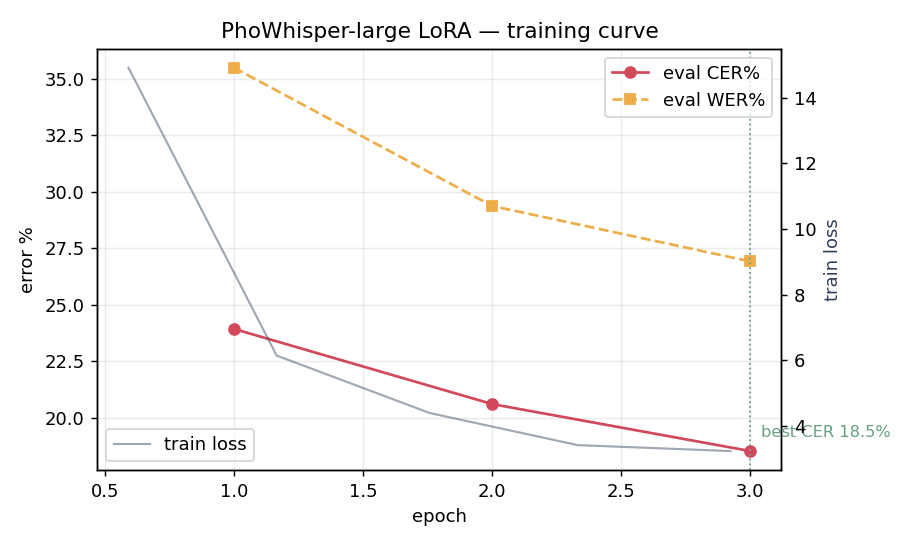
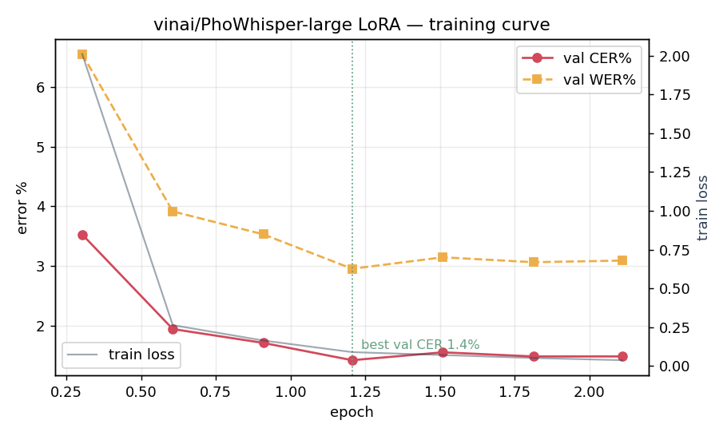
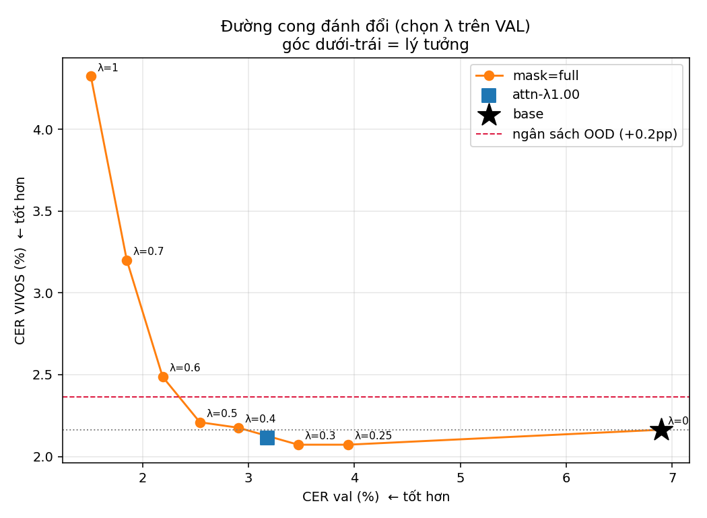
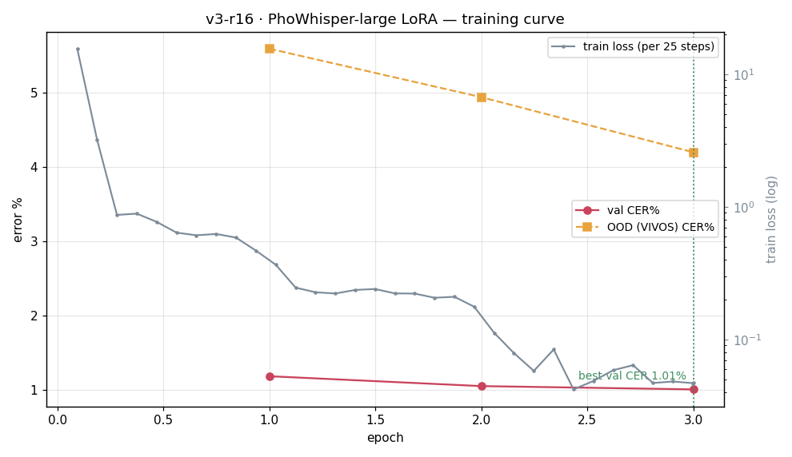
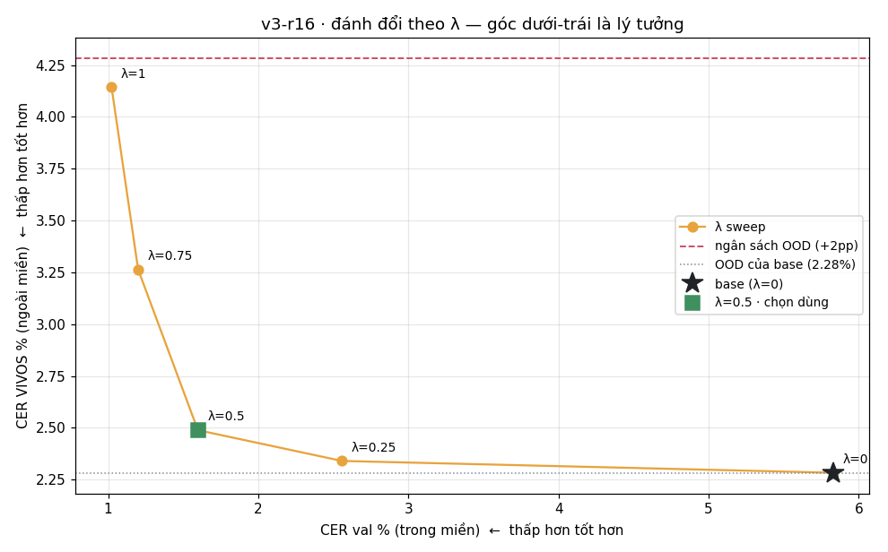

Lần đầu chứng minh fine-tune có hiệu quả, đồng thời cho thấy một rủi ro. Lần hai khắc phục rủi ro đó. Lần ba tái lập kết quả trên dataset lớn hơn, với quy trình đo lường nghiêm ngặt hơn.
CER = % ký tự sai so với transcript đúng — thấp hơn là tốt hơn. Ba lần dùng ba dataset khác nhau, nên không so CER trực tiếp giữa các lần; chỉ so mức cải thiện trong từng lần.
dataset-dot1| Split | Segment | Giờ | Meeting | Giọng | Code-switch |
|---|---|---|---|---|---|
| Train | 1,347 | 2.26 | 12 | 14 | 64% |
| Test / val | 500 | 0.65 | 5 | 14 | 69% |
| Tổng | 1,847 | 2.91 | 17 | 14 | — |
tts_input đã Việt hoá sẵn ("server" → "sơ-vơ"),
còn nhãn giữ chính tả tiếng Anh — tức bộ dữ liệu dạy mô hình nghe "sơ-vơ" viết "server".
Đây là lý do CER của mô hình gốc trên bộ này cao bất thường (29.65%).
reworkwhisper-large-v1 — cải thiện trong miền, suy giảm tiếng Việt tổng quátMô hình học tốt nội dung họp: giữ đúng chính tả từ tiếng Anh mà mô hình gốc thường phiên âm sai. Nhưng vì áp dụng toàn bộ phần trọng số đã học, không giảm biên độ, mô hình suy giảm khả năng nhận dạng tiếng Việt tổng quát. Trên VIVOS (giọng đọc sách, không liên quan tới dữ liệu train), số câu lỗi nặng tăng từ 9 lên 18 câu.
Bằng chứng thứ nhất: fine-tune có hiệu quả thật trên nội dung mục tiêu. Đồng thời, đây là lần phát hiện lỗi cần khắc phục.
reworkwhisper-large-v1 — quá trình họcdot1-v1-lora
129 step · 3 epoch
λ = 1.0

dataset-dot1 chỉ có một file
manifest.val.jsonl dùng cho cả hai. Nên 18.53% ở cuối đồ thị chính
là con số test ở slide trước, và cũng là điểm yếu phương pháp mà lần 2 phải khắc phục.winhkento/benchmark-asr.reworkwhisper-large-v1 — phần cải thiện và phần suy giảmVIVOSDEV01) trích từ một run λ=1.0 về sau — lần 1
không lưu predictions VIVOS từng câu, nhưng cùng mức λ=1.0 và cùng tập VIVOS.Hai hiệu ứng này là hai mặt của cùng một nguyên nhân: biên độ thay đổi trọng số quá lớn. Việc học nội dung mới đi kèm hiện tượng trôi khỏi năng lực gốc: chính câu mà mô hình gốc nhận dạng đúng hoàn toàn thì bản fine-tune lại sai gần như toàn bộ.
paid-dataset| Split | Segment | Giờ | Meeting | Giọng |
|---|---|---|---|---|
| Train | 1,316 | 1.57 | 12 | 10 |
| Val | 250 | 0.29 | 3 | 7 |
| Test | 236 | 0.31 | 6 | 10 |
| Tổng | 1,802 | 2.18 | 21 | 10 |
reworkwhisper-large-v3-0.5lamda — giảm biên độ, không còn suy giảmFine-tune sinh ra một lượng thay đổi trọng số Δ cộng vào mô hình gốc.
λ là hệ số nhân biên độ của Δ: mô hình cuối = base + λ·Δ.
λ=1.0 áp dụng toàn bộ Δ (như lần 1), λ=0.5 áp dụng một nửa biên độ.
Đổi λ không cần train lại: chỉ scale lại phần đã học, chi phí tính toán không đáng kể.
Bằng chứng thứ hai: lỗi ở lần 1 có thể khắc phục, và fine-tune vẫn giữ được phần lớn lợi ích khi khắc phục đúng cách.
reworkwhisper-large-v3 — quá trình họcv1c-r16-valfix
dừng ở step 175/246 · epoch 2.11
λ = 1.0

Bản chất của đánh đổi: fine-tune càng mạnh thì CER trong miền càng giảm, nhưng mô hình càng trôi xa khỏi năng lực nhận dạng tiếng Việt tổng quát. Hai chiều này ngược nhau. Câu hỏi không phải "fine-tune hay không" mà là fine-tune ở mức độ nào, và λ là tham số điều chỉnh trực tiếp mức độ đó.
use_rslora=true nên là √r, không phải r — scale 4.0 ở lần 2 (α16/r16), 8.0 ở lần 3 (α32/r16)Đo: với mỗi λ trong grid, decode hai tập cùng lúc — val trong miền để đo phần được, VIVOS ngoài miền để đo phần chi phí. λ=0 chính là base nên tự đóng vai trò điểm neo, không phụ thuộc số base từ nguồn khác.
Chọn: hai tầng. (1) Ngân sách cứng — λ nào đẩy CER ngoài miền vượt ngân sách thì bị loại; nếu không λ nào thoả thì pipeline dừng với trạng thái FAIL: không chọn adapter, không đẩy mô hình lên HuggingFace. (2) Luật khuỷu cost/benefit — đi từ λ nhỏ lên, bước nào có tỉ số ΔOOD/Δval vượt 10× tỉ số bước trước thì chặn tại đó.
| Tăng λ từ | Cải thiện CER trong miền giảm |
Chi phí CER VIVOS tăng |
Chi phí mỗi 1pp cải thiện |
|---|---|---|---|
| base → λ=0.5 | −3.46pp (−67.6% CER base) | +0.05pp (2% tổng chi phí) | 0.013pp |
| λ=0.5 → λ=1.0 | −0.37pp (−7.2% CER base) | +2.12pp (98% tổng chi phí) | 5.74pp |
Nửa dưới của thang λ (0 → 0.5) mang lại gần như toàn bộ lợi ích với chi phí không đáng kể. Nửa trên (0.5 → 1.0) mang lại rất ít lợi ích thêm nhưng chịu gần như toàn bộ mức suy giảm: chi phí cao hơn khoảng 430 lần. Lần 1 chạy ở λ=1.0 nên phải chịu toàn bộ chi phí này.

attn-λ1.00 là một biến thể khác: chỉ scale attention, bỏ
fc1/fc2. Hướng này chưa được khai thác thêm.paid-dataset-v2| Split | Segment | Giờ | Meeting | Giọng |
|---|---|---|---|---|
| Train | 4,270 | 5.02 | 40 | 10 |
| Val | 250 | 0.29 | 3 | 7 |
| Test | 426 | 0.58 | 3 | 9 |
| Tổng | 4,946 | 5.89 | 46 | — |
Reworkwhisper-large-v4 — kết quả hiện tại| Tập đánh giá | Base | λ=0.5 | Kết quả |
|---|---|---|---|
| Trong miền — họp giả lập, giọng chưa từng nghe khi train | 4.26 | 1.96 | ✓ đạt |
| VIVOS — giọng thật đọc chuẩn, kiểm tra quên | 2.28 | 2.49 | ✓ không suy giảm |
| Họp thật — 2 bản ghi, 43.2 phút, 196 segment | 31.57 | 29.06 | ~ chưa kết luận |
Cùng công thức λ=0.5 từ lần 2, áp dụng trên dataset lớn hơn và
đo lường nghiêm ngặt hơn: giảm hơn một nửa CER trong miền trên giọng chưa từng nghe,
đồng thời không suy giảm tiếng Việt nền. Không lặp lại lỗi của lần 1.
v3-r16, chưa scale λ)v3-r16
801 step · 3 epoch
đồ thị ở λ = 1.0


| λ | CER val | CER VIVOS | Δ cải thiện | Δ chi phí | Chi phí mỗi 1pp cải thiện |
|---|---|---|---|---|---|
| 0 (base) | 5.83 | 2.28 | — | — | — |
| 0.25 | 2.56 | 2.34 | −3.27pp | +0.06pp | 0.017 |
| 0.5 | 1.60 | 2.49 | −0.96pp | +0.15pp | 0.155 |
| 0.75 | 1.20 | 3.26 | −0.40pp | +0.77pp | 1.95 |
| 1.0 | 1.02 | 4.14 | −0.18pp | +0.88pp | 4.98 |
| Bộ test | Paper | Lần 1 · dataset-dot1 |
Lần 2 · paid-dataset |
Lần 3 · paid-dataset-v2 |
|||||
|---|---|---|---|---|---|---|---|---|---|
vinai/PhoWhisper-large |
base | reworkwhisper-large-v1 |
base | reworkwhisper-large-v3 |
reworkwhisper-large-v3-0.5lamda ← xuất bản |
base | adapter v3-r16 chưa publish |
Reworkwhisper-large-v4 ← xuất bản |
|
| λ | — | — | 1.0 | — | 1.0 | 0.5 | — | 1.0 | 0.5 |
| n câu — VIVOS / trong miền | — | 760 / 500 | 760 / 500 | 760 / 236 | 760 / 236 | 760 / 236 | 760 / 426 | 760 / 426 | 760 / 426 |
| VIVOS · CER ngoài miền | — | 1.78 | 4.42 | 2.16 | 4.32 | 2.21 | 2.28 | 4.14 | 2.49 |
| VIVOS · WER | 4.67 | 4.57 | 8.12 | 4.61 | — | 4.75 | 4.73 | 8.74 | — |
| Trong miền · CER họp giả lập | 29.65 | 18.53 | 5.11 | 1.29 | 1.65 | 4.26 | 1.71 | 1.96 | |
| Trong miền · WER | 47.02 | 26.92 | 8.29 | 2.56 | 3.19 | 7.40 | 2.50 | 2.97 | |
(1) Paper không công bố CER, chỉ công bố WER — để so sánh với cột Paper, cần đọc hàng WER.
(2) Hai hàng "trong miền" không so được ngang giữa ba lần vì ba dataset khác nhau; mỗi lần có cột base riêng để so sánh dọc trong cùng lần đó.
(3) Cùng một mô hình base, ba lần đo VIVOS ra ba số (1.78 / 2.16 / 2.28) vì ba cách nạp dữ liệu khác nhau — không nên lấy hiệu số tuyệt đối giữa các nhóm cột.
| Mô hình | λ | VIVOS | Trong miền |
|---|---|---|---|
reworkwhisper-large-v1 | 1.0 | ×2.48 ❌ | −37.5% |
reworkwhisper-large-v3 | 1.0 | ×2.00 ❌ | −74.8% |
reworkwhisper-large-v3-0.5lamda | 0.5 | ×1.02 ✓ | −67.6% |
adapter v3-r16 | 1.0 | ×1.81 ❌ | −59.8% |
Reworkwhisper-large-v4 | 0.5 | ×1.09 ✓ | −54.0% |
Hai bản đầu làm ra để chứng minh fine-tune có hiệu quả, không nhằm đạt điểm
cao nhất. Mỗi mô hình lại đo trên tập test riêng, đề khó dễ khác nhau: v4 bị đo trên
giọng chưa từng nghe khi học, hai mô hình trước đo trên giọng đã học.
Và −67.6% phần lớn là công học viết 70% thay vì bảy mươi phần trăm: chỉ
tính câu không có chữ số thì v4 cải thiện nhiều hơn — −53.3% so với
−45.8%.
1 · Số đo của chúng tôi nhất quán với số công bố. Paper báo cáo VIVOS WER 4.67; chúng tôi đo lại base được 4.57 / 4.61 / 4.73 qua ba pipeline. Sai lệch tối đa 0.10pp, là căn cứ cho độ tin cậy của phần còn lại trong bảng.
2 · λ=1.0 luôn gây suy giảm tiếng Việt tổng quát. ×2.48 · ×2.00 · ×1.81. Ba lần, hai dataset — không phải hiện tượng ngẫu nhiên của một lần chạy.
3 · λ=0.5 khắc phục được hiện tượng này. ×1.02 và ×1.09, gần như bằng base, trong khi vẫn giữ hơn một nửa phần cải thiện trong miền.
4 · Reworkwhisper-large-v4 có cơ sở vững nhất. Giảm
hơn một nửa CER trong miền, và là mô hình duy nhất có giọng test không xuất hiện trong train;
hai mô hình trước đo trên giọng đã có mặt khi huấn luyện.
winhsss/reworkwhisper-large-v1
· dataset-dot1 · 1,347 segment train · giọng trùng giữa các splitwinhsss/reworkwhisper-large-v3-0.5lamda
· paid-dataset · 1,316 segment train · nhãn đã khắc phục, giọng vẫn trùngwinhsss/Reworkwhisper-large-v4
· paid-dataset-v2 · 4,270 segment train · giọng tách biệt hoàn toànCông việc còn lại: bổ sung audio họp thật vào tập train. Đây là hướng duy nhất chưa được triển khai, và cũng là phần duy nhất kết quả chưa thể kết luận.